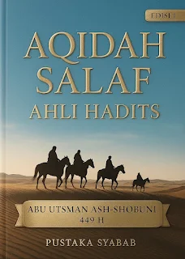
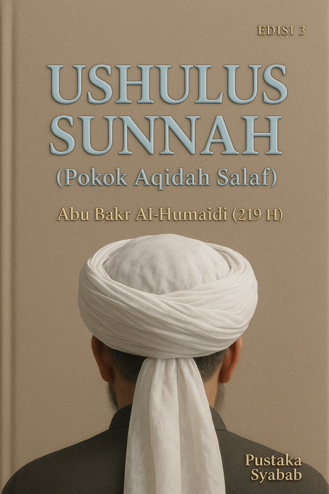
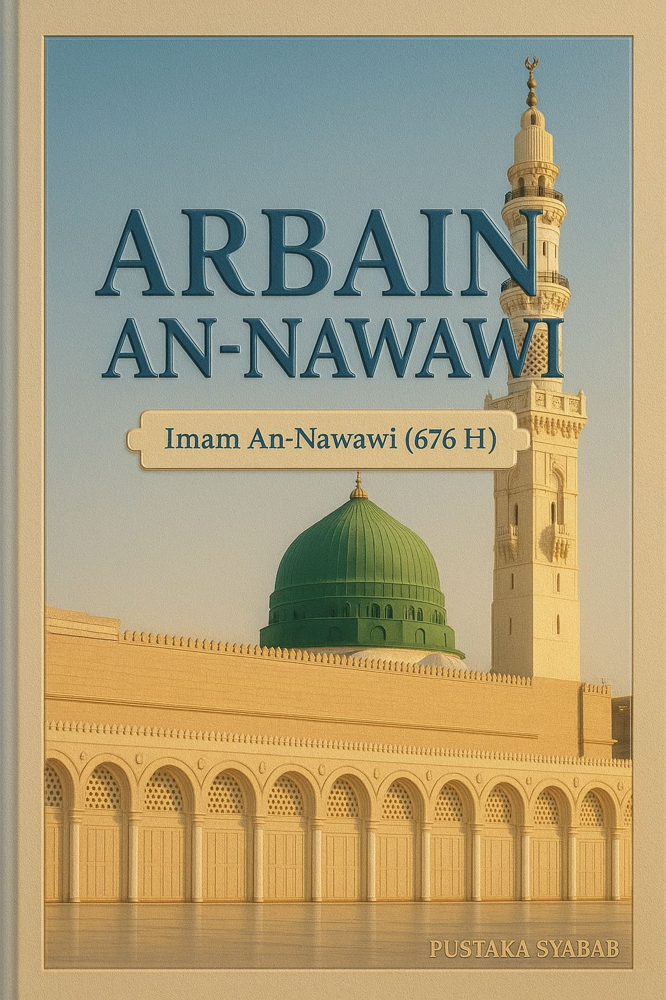
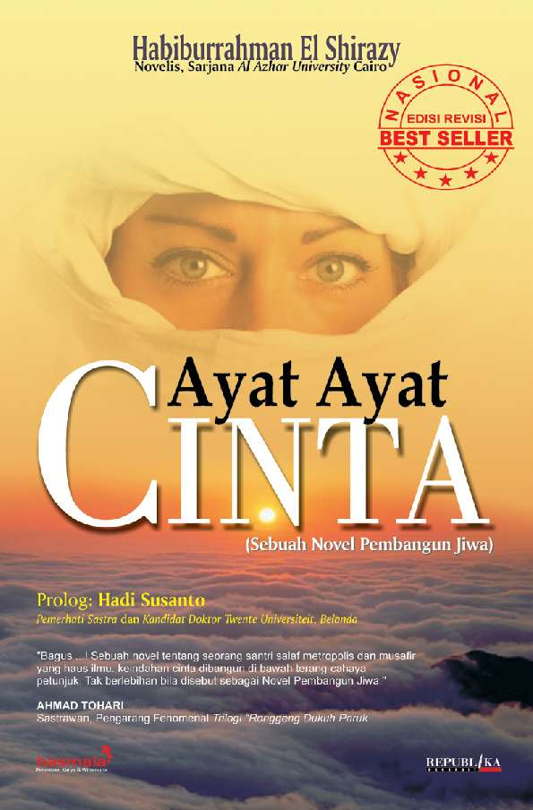
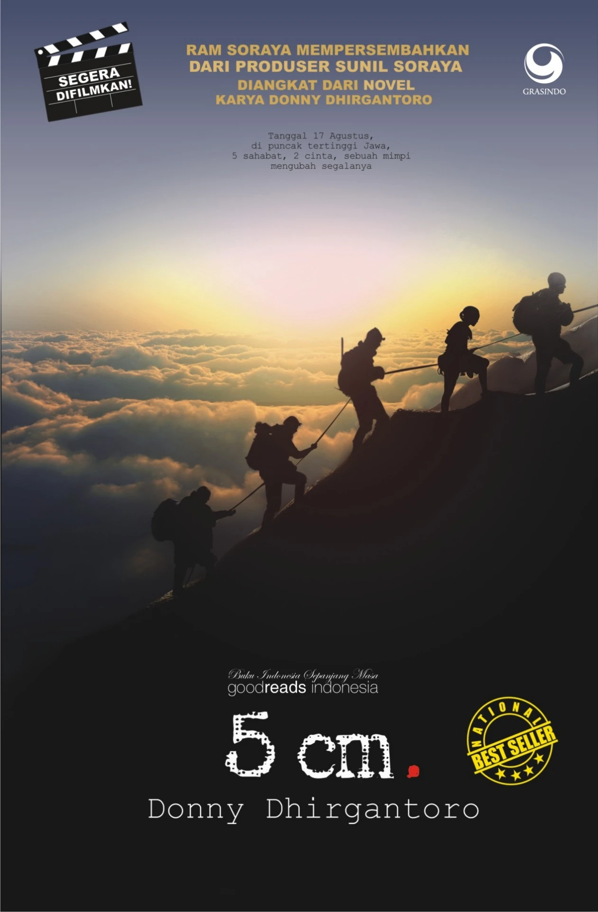
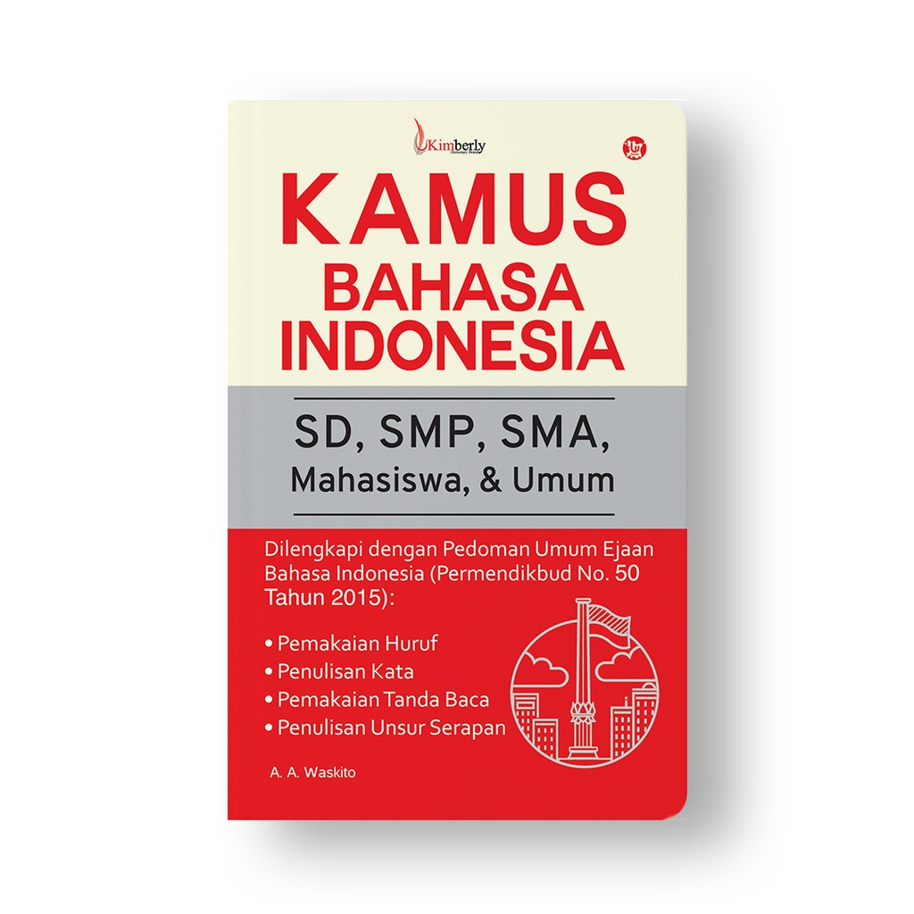
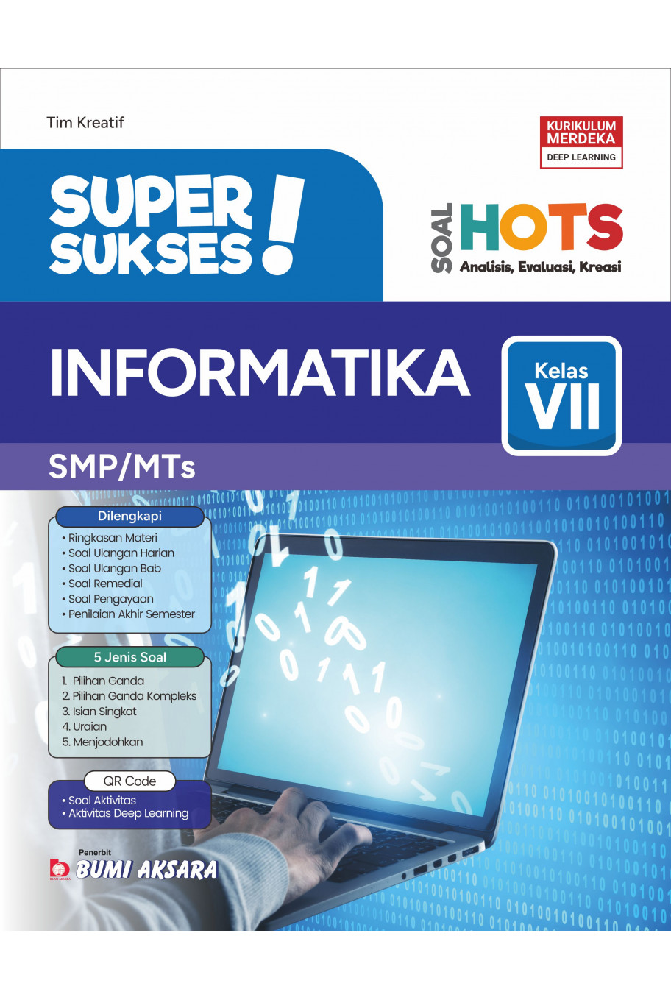

Tarjamah Aqidah Salaf Ahli Hadits
Rp100.000
Buku ini adalah terjemahan dari risalah klasik yang membahas Aqidah Ahlus Sunnah wal Jama’ah berdasarkan pemahaman Salafush Sholih

Tarjamah Ushulus Sunnah - Pokok Aqidah Salaf - Edisi 3 - Abu Bakr Al-Humaidi (219 H)
Rp132.000
Buku ini menjelaskan secara ringkas dan tegas prinsip-prinsip akidah Ahlus Sunnah wal Jama’ah menurut pemahaman Salafus Shalih.

Tarjamah Hadits Arba’in Nawawi - Edisi 2
Rp125.000
Buku ini menyajikan terjemahan dan penjelasan ringkas 40 hadits inti karya Imam An-Nawawi yang mencakup pokok-pokok ajaran Islam sebagai pedoman dasar akidah, ibadah, dan akhlak.

Tarjamah Ushulus Sunnah - Pokok-Pokok Aqidah Ahlus Sunnah - Edisi 2
Rp142.000
Tarjamah Ushulus Sunnah – Pokok-Pokok Aqidah Ahlus Sunnah (Edisi 2) membahas secara ringkas dan jelas prinsip dasar akidah Ahlus Sunnah wal Jama’ah berdasarkan pemahaman Salafus Shalih.
Laskar Pelangi
Rp.102.000
Laskar Pelangi karya Andrea Hirata adalah novel inspiratif yang mengisahkan perjuangan sekelompok anak dari Belitung dalam meraih pendidikan di tengah keterbatasan ekonomi dengan semangat, persahabatan, dan harapan yang kuat.

Ayat-Ayat Cinta
Rp95.000
Karya Habiburrahman El Shirazy menceritakan kisah percintaan dan persahabatan seorang mahasiswa Indonesia di Mesir dengan nilai-nilai iman, akhlak, dan kesabaran sebagai tema utama.

Dilan: Dia adalah Dilanku tahun 1990
Rp105.000
Karya Pidi Baiq menceritakan kisah percintaan remaja antara Dilan dan Milea di Bandung pada tahun 1990, penuh dengan romansa manis, humor, dan kenangan masa SMA.

5 cm
Rp110.000
5 cm karya Donny Dhirgantoro bercerita tentang persahabatan, mimpi, dan keberanian untuk mengejar passion, diwarnai petualangan pendakian Gunung Semeru yang penuh inspirasi dan persahabatan.

Kamus Bahasa Indonesia
Rp125.000
Kamus Bahasa Indonesia adalah buku referensi yang memuat arti, ejaan, dan penggunaan kata-kata dalam bahasa Indonesia untuk memudahkan pembelajaran dan penulisan.

Ensiklopedia Sains
Rp175.000
Ensiklopedia Sains adalah buku referensi yang memuat penjelasan lengkap tentang konsep, teori, dan fakta ilmiah dari berbagai cabang sains untuk menambah wawasan dan pemahaman.

Super Sukses IPA; Fisika SMA/MA Kelas X
Rp130.000
Super Sukses IPA: Fisika SMA/MA Kelas X adalah buku panduan belajar fisika lengkap dengan konsep, rumus, dan latihan soal untuk memudahkan pemahaman siswa.

Super Sukses Informatika SMP/MTs Kelas VII
Rp130.000
Super Sukses Informatika SMP/MTs Kelas VII adalah buku panduan belajar informatika untuk siswa kelas VII yang menyajikan materi komputer, pemrograman, dan teknologi informasi lengkap dengan latihan soal untuk mendukung pemahaman.